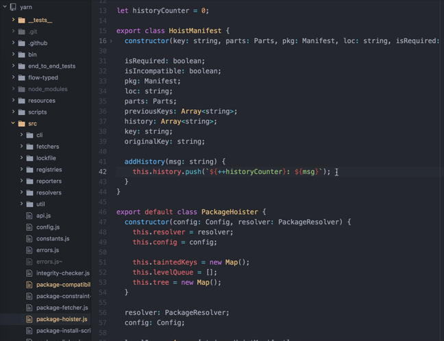
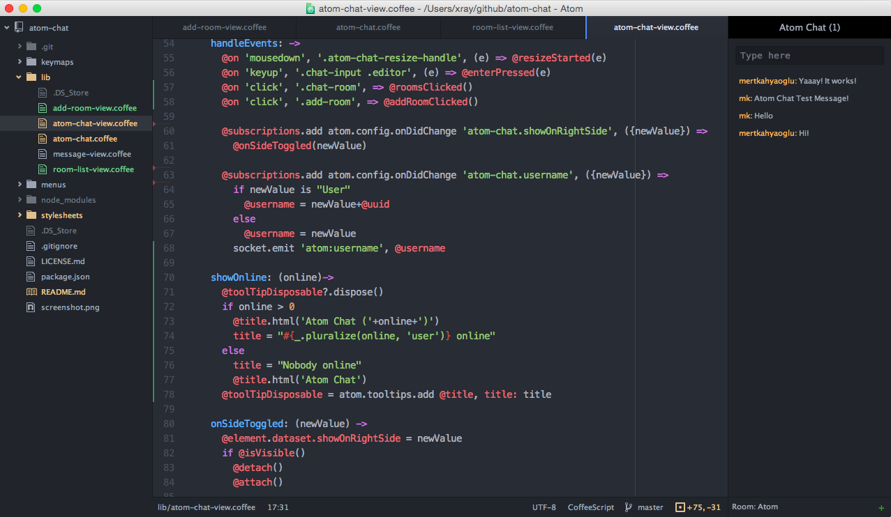

| Développé par GitHub |
| Première version 26 février 2014 |
| Dernière version 10 mars 2020 |
| Écrit en JavaScript, CoffeeScript, CSS, C++, HTML et Node.js |




LE MATCH DES PLUS ET MOINS
Les pour
Mode d’affichage multiple Sélection multiple Librairie de nombreux outils (thèmes, plugins) à disposition Intégration de Git et GitHub Documentation très fournie
Les contre
Pas aussi rapide que d'autres éditeurs du marché. On avoue on a pas trouvé d'autres limites.